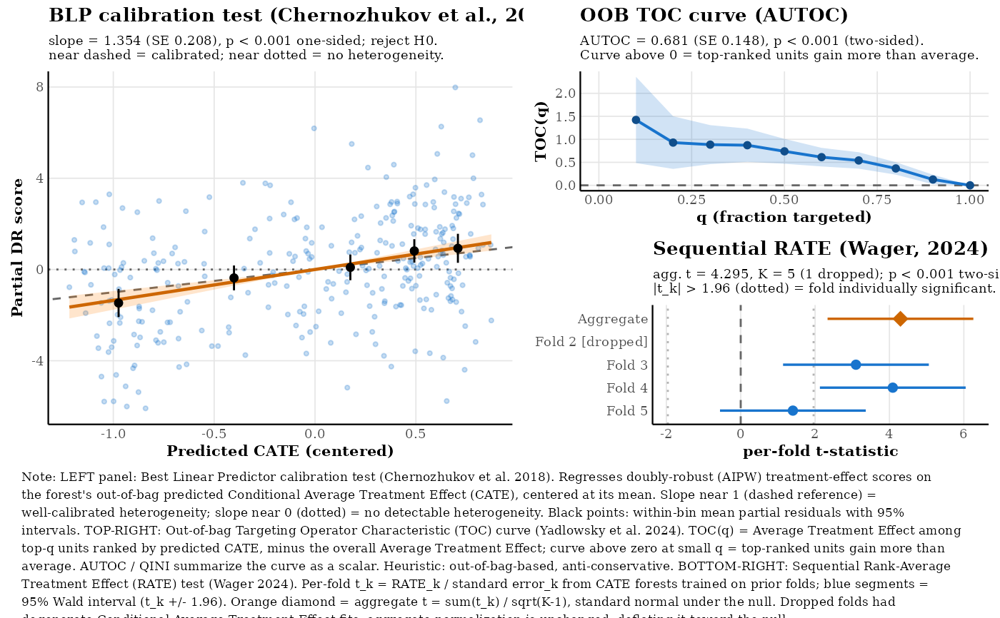
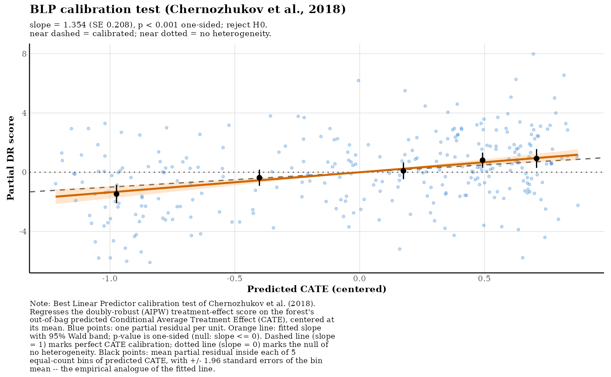
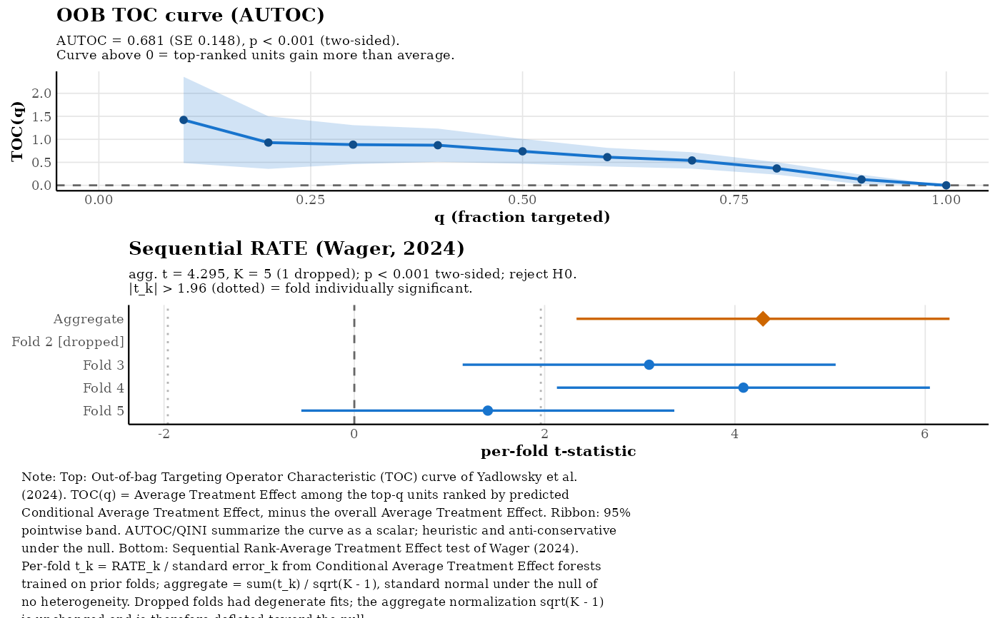
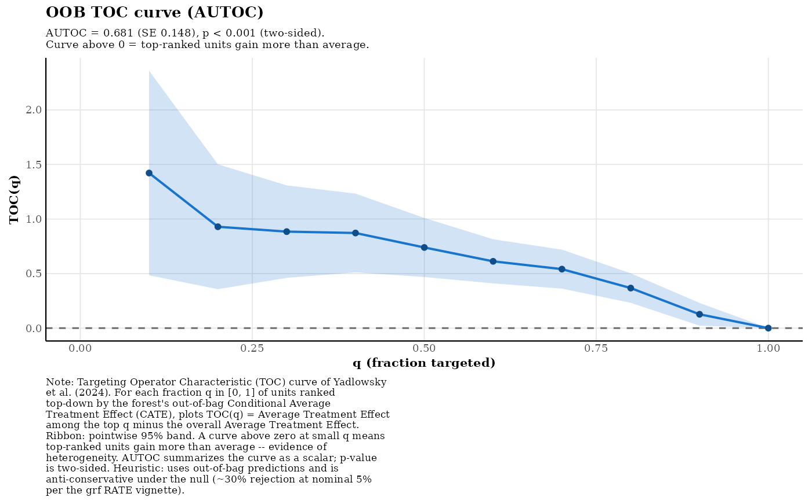
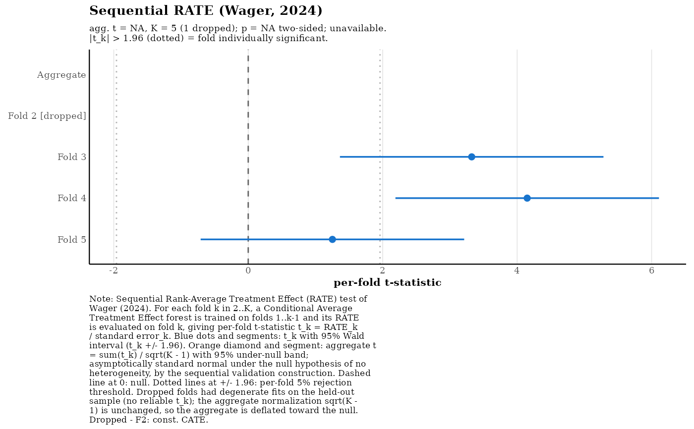

Visualizes the two preferred tests from omni_hetero(): the
Chernozhukov et al. (2018) calibration (Best Linear Predictor) test and
the sequential RATE test of Wager (2024), plus the OOB TOC curve from
Yadlowsky et al. (2024). The default layout targets a 7.5 x 5 inch
half-page figure: BLP scatter on the left, stacked TOC / per-fold
forest plot on the right, and a shared explanatory note below.
Arguments
- x
An
"omni_hetero"object (fromomni_hetero()).- which
Character. One of
"both"(default),"blp","rate","toc", or"folds". Selects which panel(s) to render."rate"returns the TOC curve stacked above the per-fold forest plot as agtable, with a shared note below.- bins
Integer. Number of quantile bins of the predicted CATE used for the BLP binned-mean overlay. Default
5. Ignored for RATE panels.- point_alpha
Alpha for the BLP per-unit scatter. Default
0.25.- ...
Unused (for S3 consistency).
Value
When which = "both" or "rate", a gtable object from
gridExtra::arrangeGrob(); the grid is drawn as a side-effect when a
graphics device is open. When which = "blp", "toc", or "folds",
a single ggplot object with its own caption.
Details
The BLP panel renders the calibration regression $$\psi_i = \beta_1 \bar\tau + \beta_2 (\hat\tau_i - \bar\tau) + \epsilon_i$$ (\(\psi_i\) = AIPW score; \(\hat\tau_i\) = OOB CATE) as a partial-residual scatter for \(\beta_2\).
The Sequential RATE panel renders the per-fold t-statistics computed
inside omni_hetero()'s k-fold routine (Wager 2024) as a forest plot,
with the aggregate statistic \(\sum_k t_k / \sqrt{K-1}\) shown as a
diamond row. Each per-fold \(t_k\) is asymptotically \(N(0,1)\)
under H0; the aggregate is also \(N(0,1)\) under H0 by the
sequential validation construction of Wager (2024) (folds are not
independent – training sets overlap – but the martingale argument
yields the same limiting distribution).
The OOB TOC panel draws TOC(q) = ATE among the top-q units ranked by
predicted CATE, minus the overall ATE, with a 95% pointwise band and
reports the AUTOC (or QINI) summary from
grf::rank_average_treatment_effect().
References
Chernozhukov, V., Demirer, M., Duflo, E., and Fernandez-Val, I. (2018). Generic Machine Learning Inference on Heterogeneous Treatment Effects in Randomized Experiments. NBER Working Paper 24678.
Yadlowsky, S., Fleming, S., Shah, N., Brunskill, E., and Wager, S. (2024). Evaluating Treatment Prioritization Rules via Rank-Weighted Average Treatment Effects. JASA, forthcoming.
Wager, S. (2024). Sequential Validation of Treatment Heterogeneity. doi:10.48550/arXiv.2405.05534
Examples
library(grf)
set.seed(1995)
n <- 300; p <- 5
X <- matrix(rnorm(n * p), n, p)
W <- rbinom(n, 1, 0.5)
Y <- X[, 1] * W + rnorm(n)
cf <- causal_forest(X, Y, W, num.trees = 200)
oh <- omni_hetero(cf)
#> Warning: Sequential RATE may be unstable at this sample size (n = 300, n/num.folds = 60; min_fold_n = 100). Training folds may be too small for the per-fold CATE forest to detect heterogeneity, which can produce degenerate RATE statistics. Consider the Calibration test (Chernozhukov et al., 2018) or the OOB RATE heuristics instead.
#> Warning: Sequential RATE: dropped 1 of 4 folds due to degenerate fits (near-constant CATE predictions on test fold).
#> Sequential RATE: Sequential RATE: 3 of 4 folds usable after degeneracy filtering. Aggregation denominator sqrt(num.folds - 1) would deflate the t-statistic relative to the number of contributing folds. Returning NA p-value. Increase sample size or use the Calibration test for formal inference at this n.
plot(oh) # BLP left, TOC + fold forest stacked right

plot(oh, which = "blp")

plot(oh, which = "rate")

plot(oh, which = "toc")

plot(oh, which = "folds")
